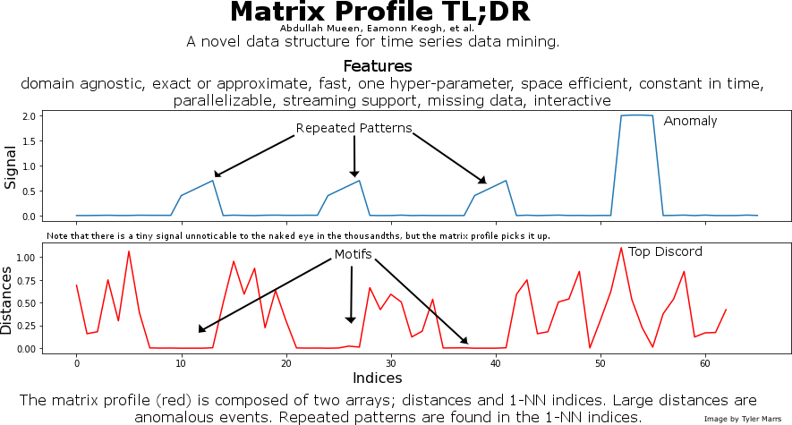
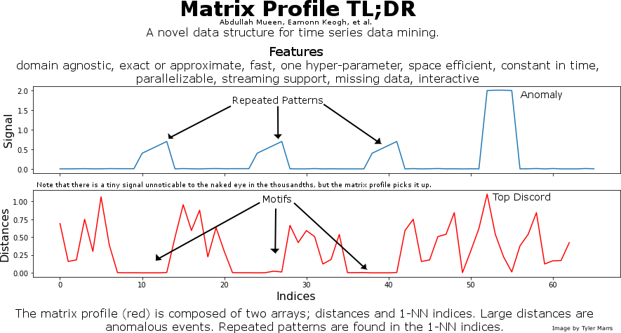

Matrix Profile TL;DR
This is a graphic I made to promote the matrix profile. It provides a very quick overview to attract interest.
This is a graphic I made to promote the matrix profile. It provides a very quick overview to attract interest.
